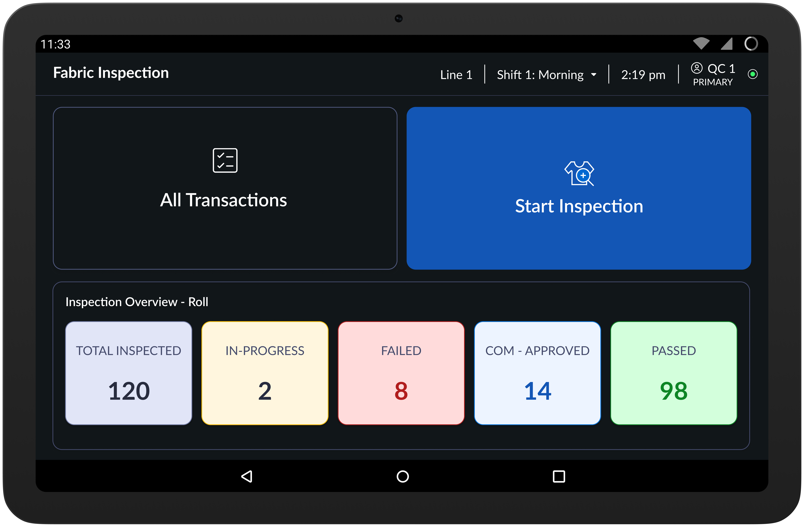
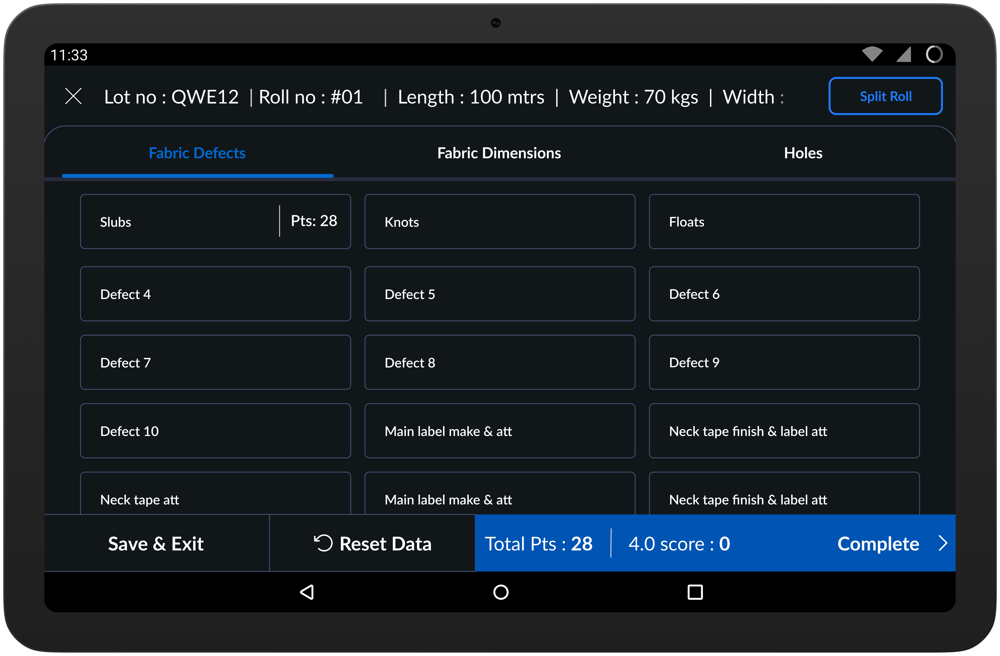
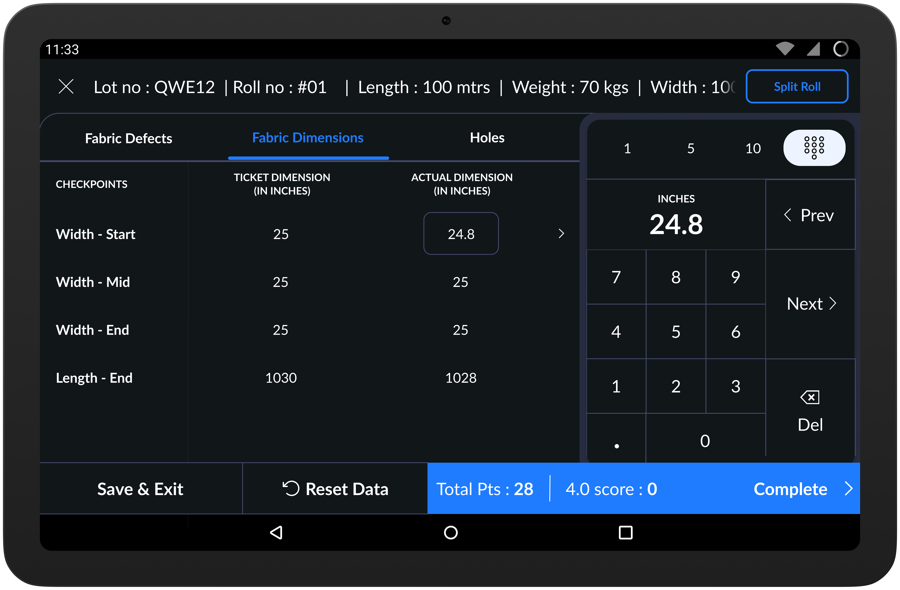
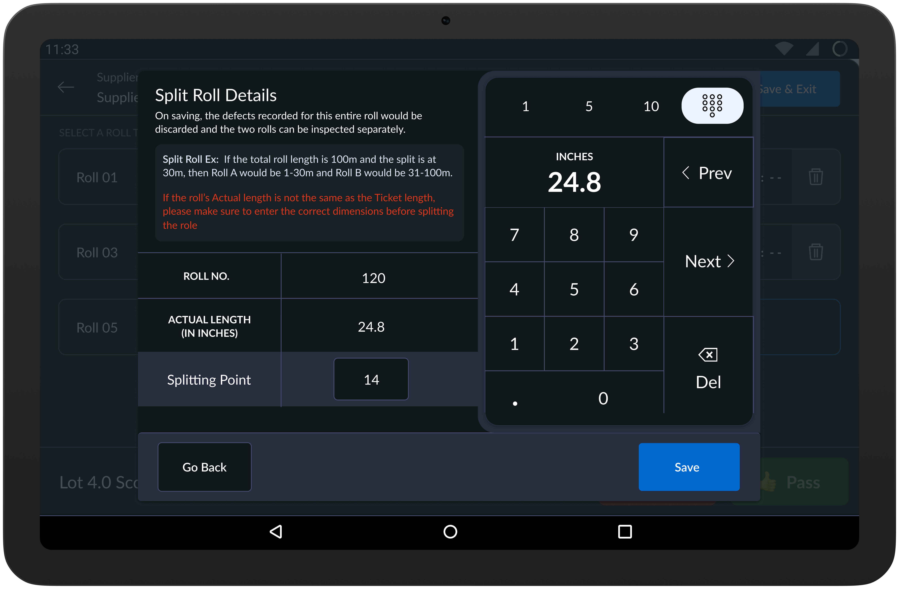
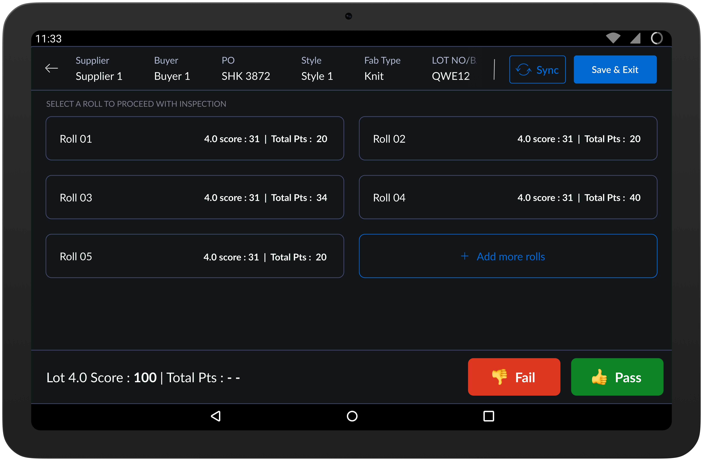
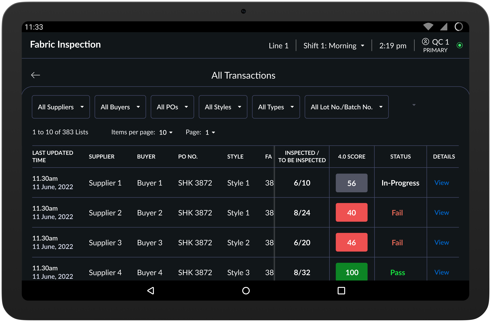

Bad fabric doesn't get caught at the machine - it gets caught too late
Quality inspectors were using a third-party tool with deep navigation, small touch targets, and no connection to the rest of the factory. I redesigned inspection as a touch-first kiosk system, cutting inspection time by 35–45% and bringing quality data into the factory's core platform for the first time.
35-45%
Improvement in inspection efficiency
50+
Factories live across Asia
$60k
Tracki8 MRR, with fabric inspection adding ~$150-200 per factory
Kiosk
Touch-first workflow for floor teams
Role
Sole designer — end to end
Platform
Kiosk (touch-first) + Desktop
Type
B2B SaaS — platform module
Problem
The tool slowed down the work it was supposed to support
Fabric inspection is the first quality checkpoint before production begins. If a defective roll makes it through, the problem surfaces hours later — during cutting, sewing, or worse, at the client's end.
Inspectors were using a third-party tool that wasn't built for factory floors. It worked, technically. But it made every inspection harder than it needed to be.
The issue wasn't correctness. It was speed, usability, and integration — all three failing at once.
Too many steps per roll
Deep navigation and repeated confirmations turned a routine task into a slow, frustrating process across hundreds of rolls a day.
Not built for factory workers
Small buttons, dense interfaces, and too much reading forced inspectors to think about the tool instead of the fabric.
Data stayed isolated
Inspection results lived outside the main platform, so cutting and packing teams could not act on quality data in real time.
No support for edge cases
Split rolls, commercial overrides, and partial lots were handled through manual workarounds outside the system.
What I Learned
Three constraints that shaped every decision
Direct access to inspectors was restricted — I couldn't sit with them or run usability tests. Insights came through delivery teams, training staff, and on-ground observers. That constraint forced sharper decisions upfront.
01
Inspectors think in actions, not screens
Inspectors aren't navigating an app — they're completing a task. Every extra screen, confirmation, or mode switch is friction that compounds across hundreds of rolls a day. The system needed to disappear into the work.
Every screen reduced to a single next action. No dead ends, no back-tracking.
02
The kiosk context changes everything
Inspectors work standing up, hands often occupied, on a large touch screen. Small targets aren't just annoying — they cause real mistakes that affect downstream quality data. Keyboard input on a kiosk is slow and error-prone.
Large tappable buttons, predefined options, numeric keypads only. No free-text in the critical path.
03
The system didn't match how factories actually work
Split rolls, commercial approvals on failed lots, buyer-specific grading thresholds — none of these were supported. Inspectors had built workarounds that lived entirely outside the system, which meant the data was always incomplete.
Real factory scenarios designed in, not worked around — split rolls, overrides, and commercial approvals all handled inside the platform.
The Design
Four flows, one philosophy: clarity over clutter
The inspection system was rebuilt around how inspectors actually work: touch-first and task-focused, with every screen answering one question.
01
Lot & Roll Selection
Setting up an inspection should take seconds, not minutes. Inspectors select the supplier, buyer PO, style, and lot from large tappable options — no typing. They define the sampling percentage and 4.0 score threshold, and the system automatically calculates how many rolls to inspect based on industry-standard sampling logic.
A live counter updates as rolls are selected and provides visual feedback when the selection limit is reached — no manual calculation, no over-inspection errors.

System-calculated sampling limits eliminated a whole category of inspection errors — over-inspecting or under-inspecting a lot — before they could happen.
02
Fabric Defect Logging
This is where most inspection time is spent. Common defects — slubs, knots, floats — are displayed as large, tappable buttons and logged by size slab, not free-form description. Holes use predefined size buckets. A live bottom panel updates the total points and 4.0 score in real time as defects are logged.
A top tab switcher organises actions by inspection mindset: Fabric Defects, Holes, Fabric Dimensions. Inspectors switch contexts without losing their place or breaking their flow.

The original system required inspectors to type defect descriptions. Switching to predefined categories felt like a loss of granularity at first — but data quality improved because selections were consistent across inspectors, not dependent on spelling or individual terminology.
Fabric Dimensions
Inspectors switch to the Fabric Dimensions tab and enter three width readings - start, mid, end - plus the roll length. Actual values are compared against the ticket dimensions automatically. Any deviation adjusts the 4.0 score in real time.
The entire flow uses guided numeric input via a large keypad - no form fields, no keyboard toggling. The goal was accuracy without slowing the inspector down between measurements.

Optimised for touch input and accuracy - eliminating the need to toggle between keyboards mid-inspection kept the measurement step as fast as the defect logging step.
Split Roll Handling
In real factories, rolls are often only partially usable. The old system had no concept of this - inspectors tracked splits on paper alongside the digital tool.
The split roll flow is accessible directly during inspection. The inspector enters the split point on a large numeric keypad. The system shows exactly how the roll will be divided, warns if the actual length differs from the ticket, and auto-creates two independent rolls - each with its own inspection record, score, and decision.

A manual workaround that lived entirely outside the system was brought inside it. Both split rolls are now fully traceable - their own scores, their own decisions, their own audit trail.
03
Roll Grading & Lot Closure
Each roll gets a system-calculated 4.0 score and pass/fail result, with controlled override support for commercial decisions and complete attribution.
The override is intentional — buyer thresholds vary, and management sometimes instructs a pass on a borderline roll for commercial reasons. The system supports this without hiding it. Every override is logged, timestamped, and user-attributed.
Once all sampled rolls are graded, a lot summary surfaces the pass/fail status of each roll with two final CTAs: Pass Lot or Fail Lot.

System judgment and human authority are separated by design - the machine scores, the person decides. This mirrors how factory decisions actually work, where business context sometimes overrides a data point.
04
Transaction Logs & Commercial Approvals
Every action is timestamped: defect entry, score changes, overrides, and approvals. Failed lots can be revisited by authorized users with full audit visibility.
This turned inspection data from a point-in-time snapshot into a traceable record that downstream teams in cutting, sewing, and packing could actually rely on.

Auditability and decision authority are captured in one place - inspectors, quality teams, and commercial approvers all work from the same timestamped history.
Outcome
35-45% faster inspections and usable quality data across teams
35-45%
Improvement in inspection efficiency post-rollout
50+
Factories live across Asia
$60k
Tracki8 MRR with FI module upsell
0
Third-party inspection tools in onboarded factories
Unexpected outcome
Before this system, cutting and packing teams made decisions without visibility into fabric quality. Once inspection data lived inside the platform, that changed. Downstream teams could filter incoming fabric by lot score, flag borderline rolls before they reached production, and trace defects back to the specific supplier and batch. Inspection stopped being a gate and became a data source.
Looking Back
What I'd do differently
Get closer to inspectors earlier
Research was filtered through intermediaries — delivery teams and training staff — not the inspectors themselves. That worked, but it meant designing against described behaviour rather than observed behaviour. I'd push harder for even one day of direct floor access before committing to the core flows.
Build the analytics layer sooner
The logs capture everything, but dashboarding for supplier quality trends came later. Surfacing that layer earlier would have created quality intelligence value faster.